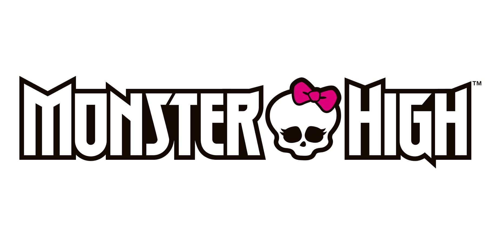
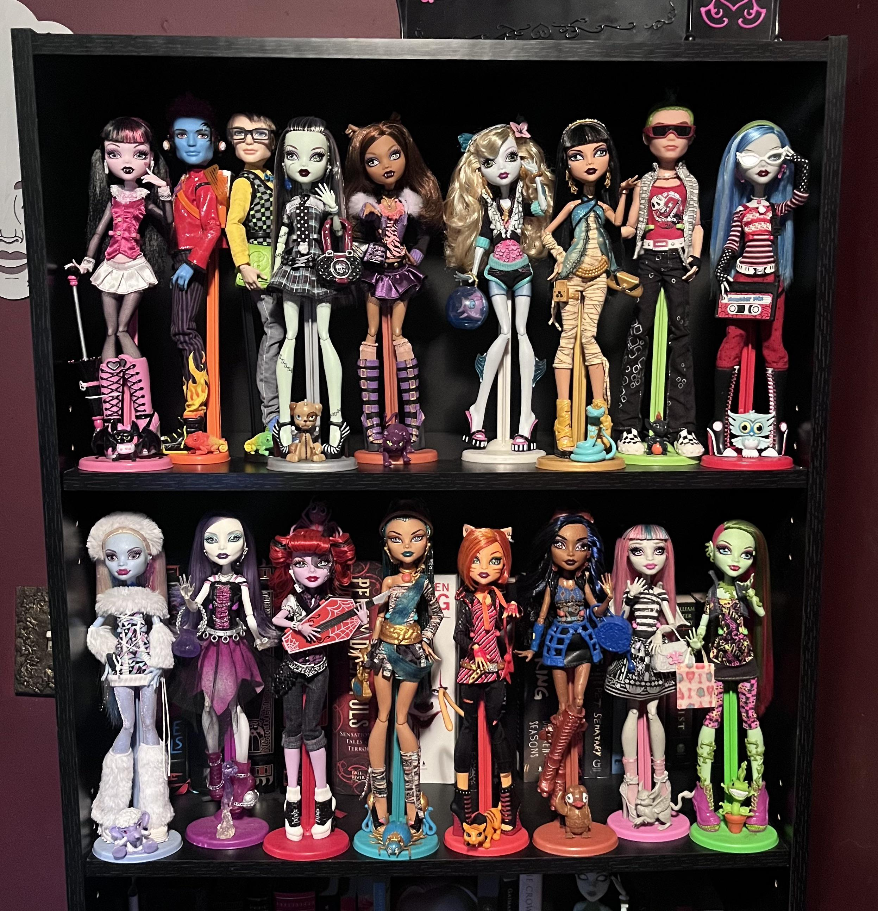

What is Monster High?
Monster High is a fashion doll franchise created by the toy company, Mattel. The franchise was launched on June 11, 2010 and ran until 2018. The franchise features dolls that are inspired by monster movies, sci-fi horror, folklore, myths, fairy tales, and more. A TV show, 15 animated movies, video games, and books were produced from this franchise. Monster High was very popular to children and Mattel was extremely successful in their earnings. However, in 2016, sales and earnings declined rapidly causing Mattel to reboot the franchise with a new "look." The reboot failed as well, leading to the discontinuation of Monster High Dolls Generation 1 & 2 in 2018. Mattel then relaunched the franchise in 2020, with new dolls, new appearances, a live-action musical, and even a new animated TV series. The Nickelodeon show was cancelled in September 2024, moving the Generation 3 media to Youtube. A lot of people from the Gen Z generation, including myself, actually prefer the original Monster High dolls (Generation 1) versus the newer generation. Which is why I can sell my collection and pay my tuition, because the dolls are so rare that people will pay ANY price for these dolls.

Monster High Dolls: Generation 1

The image above is a picture of the majority of the Monster High dolls and characters G1. As you can see, they all have a unique look to them and are either a monster or animal. Here is a list of the main characters and what they are:
(Left to right)
- Clawdeen Wolf is the daughter of a Werewolf and is one.
- Lagoona Blue is the daughter of a Sea Monster and is one.
- Cleo de Nile is the daughter of a Mummy and is one. She is dating Deuce Gorgon.
- Deuce Gorgon is the son of Medusa and is a gorgon. He is dating Cleo de Nile
- Frankie Stein is the daughter of Frankenstein and she is a frankenmonster. She is the first and orignal character of Monster High.
- Draculaura is the daughter of Dracula and is a vampire.
These aren't all the characters, but just the main ones that you see in the Tv show.
Selling Monster High Dolls on EBay
Monster High Dolls on EBay could go for a range of $30-$300. Now, reading that you might say, "Wow really, just for some dolls?", and yes that is true. $30-$300 is reasonable for "just some dolls." It's because Monster High G1 was discontinued so long ago that any doll from that era is highly rare. People buy these dolls for their collection, but also for their children that say "Mom, Dad, I want the vintage version of Monster High!" 2010-2018 isn't really that old to be considered vintage... But that's what I imagine a child nowadays would say.
Here are some examples of how expensive these dolls really are:


I can sell the bin of Monster High Dolls that I have for $600 on EBay. That $600 won't cover the cost of my tuition, but it sure would help it.
Now you tell me, what looks better? Monster High Generation 1 or Generation 2?
Generation 1

Generation 3

Why is my Monster High Dolls collection special?
- G1 & G2 Dolls have been discontinued.
- They are nostalgic to children born in the 2000s.
- They are unique monster inspired dolls.
- All of the dolls are fashionable.
Dolls for Sale
(Left to right)
- Clawdeen Wolf - $110.00
- Lagoona Blue - $110.00
- Cleo de Nile - $110.00
- Deuce Gorgon - $110.00
- Frankie Stein - $200.00
- Draculaura - $110.00
Additional item for sale:
Catty Noir Doll
Sources:
Monster High Wiki
Wikipedia
Ebay